Chapter 21. Documents and Document Templates
Documents in the Early Warning, Alert and Response System (EWARS) refer to bulletins. These are used to disseminate key data collected in the system. The terms “bulletins” and “documents” are used interchangeably, and the terms “document template” and “bulletin template” convey the same meaning.
EWARS facilitates automated production of bulletins. Once a document template for a specific bulletin is configured, there is no need to produce that bulletin manually daily, weekly or monthly: bulletin template creation is a one-off activity.
21.1 Configuring a bulletin template
EWARS recommends that you use the standardized sample bulletin template to allow for standardization and consistency of branding across EWARS documents/bulletins. The Model account provides you with this recommended template. If required, you can customize the template to suit your context.
There are two ways to configure a bulletin template in the system.
- Either use a sample bulletin template: the Model account has a sample bulletin template (the Sample Weekly EWARS bulletin) which you can transfer to your account and modify according to your country’s requirements
 The Sa The Sa |
mple Weekly EWARS bulletin is the standard bulletin. EWARS recommends a similar pattern and outlook of bulletins for all accounts. This allows standardization across all EWARS accounts and comparisons between contexts. |
- Or create a new bulletin template: you can create and configure a new bulletin template according to your country’s requirements.
| Modify |
ing a sample bulletin template or creating a new one should be an end-stage activity of setting up an EWARS account. Before embarking on this activity, please ensure that the Locations, Forms and Indicators features are correctly configured in the system. |
 Note: creating a new bulletin template or modifying complex parts of the sample bulletin template, such as adding new sections, adding rows in tables and similar, requires knowledge of Hypertext Markup Language (HTML) and Cascading Style Sheets (CSS). For technical support on the bulletin template, please contact the EWARS Super Administrator. Note: creating a new bulletin template or modifying complex parts of the sample bulletin template, such as adding new sections, adding rows in tables and similar, requires knowledge of Hypertext Markup Language (HTML) and Cascading Style Sheets (CSS). For technical support on the bulletin template, please contact the EWARS Super Administrator. |
The screenshot below is of a standard bulletin produced for week 31 of 2021:
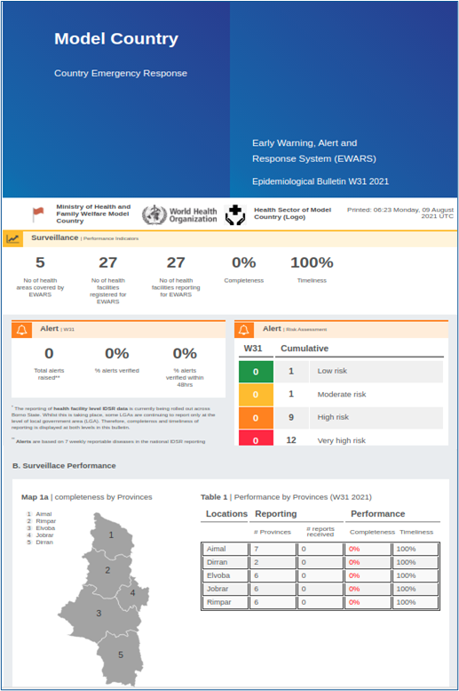
21.2 Transferring the sample bulletin template
The sample bulletin template is in the Model account. Transfer it to your account using the following steps.
- Select Menu > Configuration Transfer. Select Model account from the Source Account drop-down menu. The system lists all transferable items. Search and select Sample Weekly EWARS Bulletin > click on
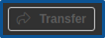
, and the sample template is transferred to your account, along with its dependencies.
To view the template in your account, follow the steps below.
- Select Menu > Document Templates, and the bulletin template is listed, as shown below:
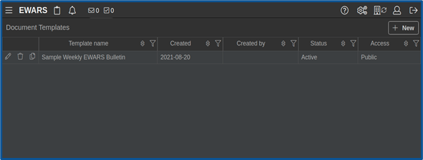
- Click on the edit icon of Sample Weekly EWARS Bulletin > click on the Template tab at the left-hand side, and the HTML editor screen below appears:
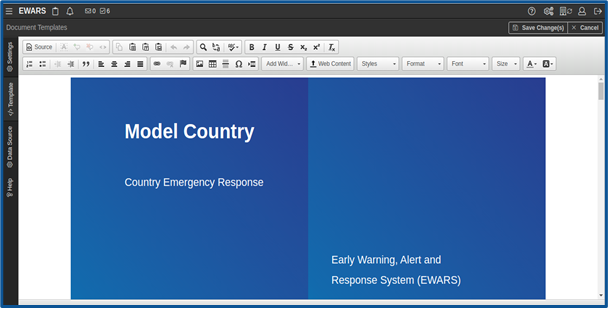
The above screenshot shows the editor screen in which the template is designed. The following topic sets out how to modify the sample bulletin template according to your country’s requirements.
21.3 Modifying the sample bulletin template
The sample bulletin is not functional on its own: you need to modify it according to your requirements and reconfigure it with the data available in your account to make it functional. The list of modifications is as follows:
modifying the bulletin template settings
modifying the front page – including modifying text and images on the front page
modifying the analysis page – including modifying the heading of any section, reconfiguring widgets and adding or removing sections in bulletin template and rows in tables
modifying the last page – including modifying the contact information on the last page.
21.3.1 Modifying the template settings
- Select Menu > Document Templates. Click on the edit
 icon of the Sample Weekly EWARS Bulletin, and the screen below appears:
icon of the Sample Weekly EWARS Bulletin, and the screen below appears:
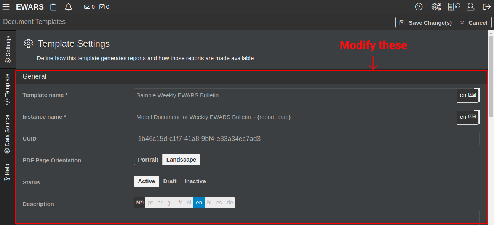
- Modify the fields as follows.
Template name [Mandatory]: modify the template name (e.g. “Nambutu Weekly EWARS Bulletin”).
Instance name [Mandatory]: modify the instance name – this format appears in the Documents feature when you view it, as in the following example:
|
→ | Generated bulletin name Nambutu Weekly EWARS Bulletin – W16 2021 | 18 – 24 April |
Here, {report_date} is a tag/special purpose variable. When it is used, the system replaces {report_date} with the week number and calendar date (e.g. W16 2021 | 18 – 24 April).
The tag/special purpose variable is used to display specific values like the current month, year and location in the document. For example, the location name can be added as {location_name}.All tags, along with their purposes, are listed under the Help tab.
UUID (universally unique identifier): this is a system-generated unique number and cannot be edited.
PDF Page Orientation: set as Portrait.
Status: set as Active.
Active – the template that is configured and is in use
Draft – the template that is being configured
Inactive – inactive bulletins do not appear in the Documents feature
Description: modify the description of the bulletin template.
Tag: enter a tag for the bulletin template: this is an identifier that will help you to find your template using Configuration Transfer. You can add one or more tags.
Generation: the system generates a bulletin in accordance with time interval and location specification settings. To understand this function better, refer to the following examples.
Example 1. Generate a bulletin for Nambutu on a weekly basis for 2021.
- Set Interval as Weekly > set Location spec. as Generate for specific location > set Location as Nambutu > select the Start date 2021-01-01 in the calendar > select the End date 2021-12-31 in the calendar, as shown below:
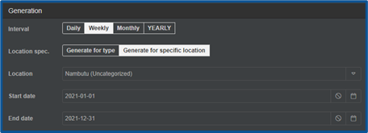
The bulletin is auto-generated for each week for Nambutu for 2021.
Example 2. Generate a bulletin for each province of Nambutu on a weekly basis for 2021.
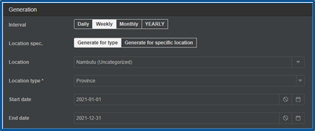
- Set Interval as Weekly > set Location spec as Generate for type > set Location as Nambutu > set Location type as Province > select the Start date 2021-01-01 in the calendar > select the End date 2021-12-31 in the calendar, as shown below:
The bulletin is auto-generated for each week for all the provinces of Nambutu for 2021.
Access constraints: set as Public.
Public – the bulletin is accessible without logging into EWARS via an external link.
Private – the bulletin is accessible only for EWARS users who are logged in.
- Click on Save Change(s).
21.3.2 Modifying the front page
You can change any text or images available on the front page of the sample bulletin. For demonstration purposes, this guide shows how to modify the country name and logo highlighted below:
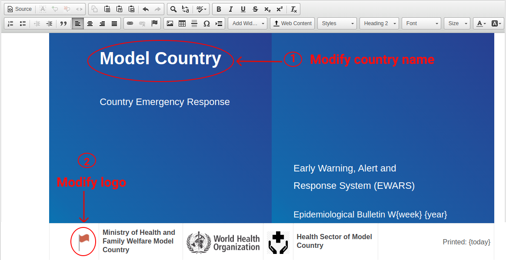
Step 1. Modify the text on the front page.
Select Menu > Document Templates. Click on the edit
icon of Sample Weekly EWARS Bulletin > click on the Template tab, and the HTML editor screen appears.Keep the cursor on Model Country > click delete and delete the text “Model Country”. Type the new name and the text is changed.
Use the same process to change any text on the front page.
Step 2. Modify images on the front page.
The front page contains images of logos, flags or photos. These should be uploaded and saved under web content. Hence, modifying images is a two-step process.
Step 1. Upload an image to web content.
First, select images you want to upload to web content: they should be in your laptop/desktop folder.
- Select Menu > Document Templates. Click on the edit icon of Sample Weekly EWARS Bulletin > click on the Template tab, and the HTML editor screen appears.
- Click on , and the Web Content screen opens in a new tab, as shown below:

Click on > select the relevant Folder Path (e.g. images) > click on , and a file chooser dialogue box opens. Select an image file, and the file is uploaded.
Look for the newly uploaded file and click on the copy icon of the uploaded image > close the Web Content browser tab, and you will be back on the editor screen.
The image file is now uploaded. The second step is to provide the copied universal resource locator (URL) of the uploaded image.
Step 2. Modify the image URL.
- Double-click on the sample image you want to modify, and the Image Properties screen below opens:

Replace the URL under the Image Info tab with the copied URL of the uploaded image > enter the new Width in pixels (e.g. “100”) > enter the new Height in pixels (e.g. “100”) > click on OK.
Click on Save Change(s), and the front page appears with the new text and logos.
21.3.3 Modifying the analysis pages
Analysis pages follow a standard structure, and modification is needed in specific places, including:
modifying the heading of any section
reconfiguring widgets
adding or removing sections in the bulletin template and rows in tables.
Step 1. Modify the heading of any section.
You can modify any section heading or subheading. For demonstration purposes, this guide shows how to change the section heading “C. Trend in consultations”, as highlighted below:
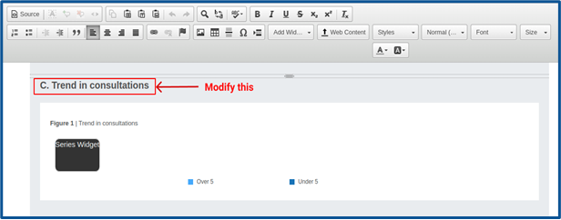
Select Menu > Document Templates > click on the edit
icon of Sample Weekly EWARS Bulletin > click on the Template tab, and the HTML editor screen appears.Look for section C. Trend in consultations in the bulletin template. Keep the cursor on this section, click delete and delete the text “Trend in consultations”. Enter the new heading name (e.g. “Trend in attend”), and the heading is changed, as shown below:
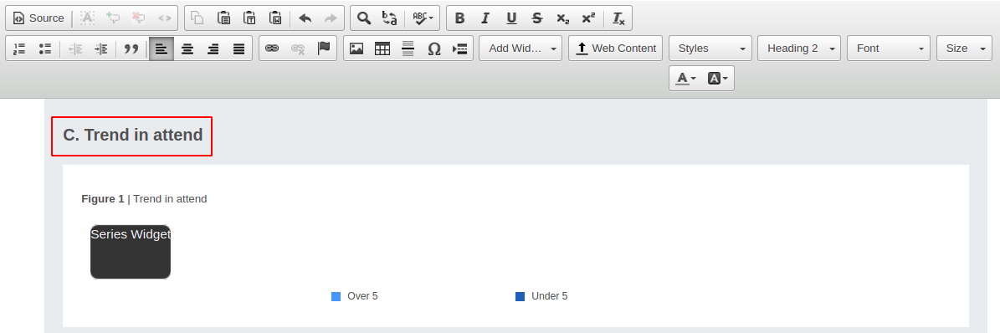
Use the same steps to modify other headings of the section if required.
- Click on Save Change(s).
Step 2. Reconfigure the widget’s indicators, forms and locations, according to your requirements.
The sample bulletin template contains the following types of widgets:
raw widget
series widget
map widget
table widget
category widget.
To modify each widget, follow the steps below.
- Select Menu > Document Templates. Click on the edit icon of Sample Weekly EWARS Bulletin > click on the Template tab, and the HTML editor screen appears. Scroll down and look for the widget to be modified, as shown below:
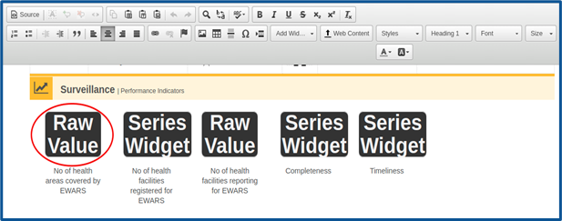
- Double-click on the widget, and the widget configuration screen below appears:
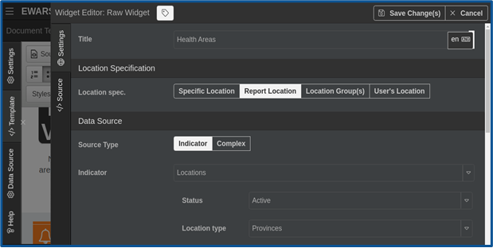
- Configure the widget as required. For more information about configuring widgets, refer to the relevant widget topic in Chapter 17. Widgets and their configuration as listed below:
raw widget – refer to topic 17.6.2 Raw widget in Bulletins and Website Builder
series widget – refer to topic 17.18 Series chart widget
map widget – refer to topic 17.16 Map widget
table widget – refer to topic 17.21 Table widget
category widget – refer to topic 17.20 Category widget
- Click on Save Change(s).
Step 3. Add or remove sections in the bulletin template and rows in the table.
Adding or removing a section or a row in a table requires knowledge of HTML and CSS. To perform any such modifications in the bulletin template, please contact the EWARS Super Administrator for technical support.
21.3.4 Modifying the final page
On the final page of the sample bulletin template, you need to change the contact information as highlighted in the screenshot below:
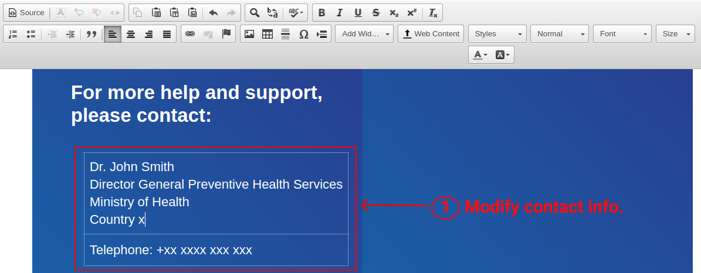
Select Menu > Document Templates. Click on the edit icon of Sample Weekly EWARS Bulletin. Click on the Template tab, and an HTML editor screen appears.
Scroll down to the bottom and look for the section on help and support as shown below:
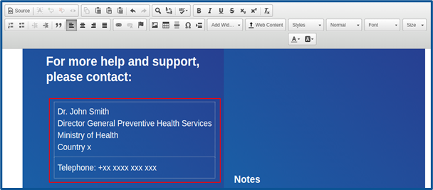
Place the cursor on the name of the contact person > delete it > enter the name and telephone number of the contact person for your country.
Click on Save Change(s).
21.4 Creating a new bulletin template
Creating a new template requires basic knowledge of HTML and CSS. For technical support, please contact the EWARS Super Administrator.
You can create a new bulletin template by following the steps below.
Step 1. Configure general settings.
- Select Menu > Document Templates. Click on New, and the screen below appears:
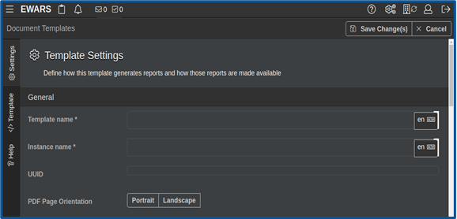
- Populate the fields under the Settings tab. For information on how to populate these, refer to topic 21.3.1 Modifying the template settings.
Step 2. Design the bulletin template.
The top-level guidelines on how to design a new template are set out below. It is a powerful way to add content, but it requires knowledge of HTML and CSS. For technical support on creating a bulletin template, please contact the Super Administrator.
- Select Template tab and the document template editor opens, as shown below:
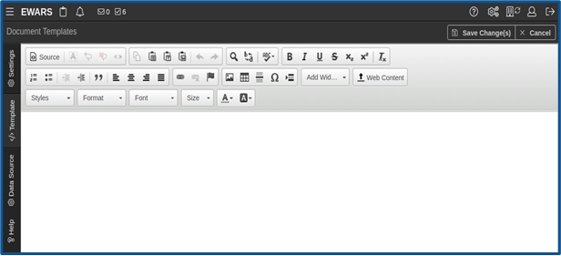
Insert sections and pages using HTML and CSS.
Enter section headings, subheadings and text, and format them.
Insert widgets such as table, image, series, category, pyramid and/or map widgets.
- Configure each of the widgets inserted. For more information on how to configure widgets, refer to Chapter 17. Widgets and their configuration.
- Configure special purpose variables/tags to display specific values like the current month, year and location in the document. For example, the location name can be added as “{location_name}”. More information on tags is listed under the Help tab.
- Click on Save Change(s), and a notification appears that the template has been added.
21.5 Deleting and duplicating an existing bulletin template
To delete a bulletin template, follow the steps below.
- Select Menu > Document Templates. Click on the delete
 icon of the bulletin template (e.g. Sample Weekly EWARS Bulletin). Click on Confirm and it is deleted.
icon of the bulletin template (e.g. Sample Weekly EWARS Bulletin). Click on Confirm and it is deleted.
To duplicate a bulletin template, follow the steps below.
- Select Menu > Document Templates. Click on the duplicate icon of the bulletin template (e.g. Sample Weekly EWARS Bulletin). Edit the Template name > click on Save Change(s), and the template is duplicated.
21.6 Viewing bulletins
To view the bulletins available in your account, follow the steps below.
- Select Menu > Documents, and the screen below appears:
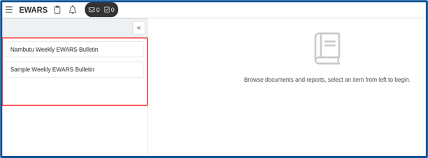
The bulletins available in your account are listed at the left-hand side as shown above.
- Click on the bulletin name (e.g. Sample Weekly EWARS Bulletin), and bulletins are listed, by year, in the right-hand side panel, as shown below:
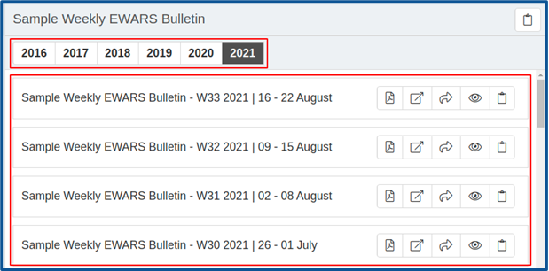
- Select the year for which you want the bulletin (e.g. 2021). Click on the view icon at the right-hand side of the bulletin. Wait for few seconds while the bulletin loads completely, and the screen below appears:
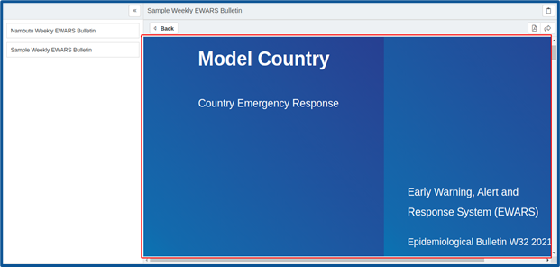
- Click on the collapse icon to close the side panel.
21.7 Viewing a bulletin in a new browser window/tab
- Select Menu > Documents. Select the document name (e.g. Sample Weekly EWARS Bulletin) > select the year (e.g. 2021). Click on the new window icon at the right-hand side of the bulletin, and the bulletin opens in a new browser window/tab.
21.8 Downloading a bulletin as a PDF file
- Select Menu > Documents. Select the document name (e.g. Sample Weekly EWARS Bulletin) > select the year (e.g. 2021). Click on the PDF icon at the right-hand side of the bulletin. Wait for a few seconds while the PDF is prepared, and the PDF is downloaded.
21.9 Sharing a bulletin
You can share the bulletins in two different ways: via email or via a copied URL link.
21.9.2 Sharing via a copied URL link
- Select Menu > Documents > select the relevant document (e.g. Sample Weekly EWARS Bulletin) > select the year (e.g. 2021) > click on the copy icon at the right-hand side of the bulletin > share the copied URL link using email or any medium.
| Note: the bulletin shared must have access set as public or it will not be accessible. |
The following chapter provides an overview of the Website Builder feature. It will help you build public-facing EWARS websites and share important data and reports with key personnel not registered as EWARS users.